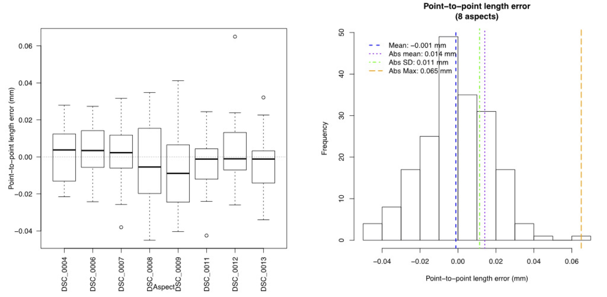
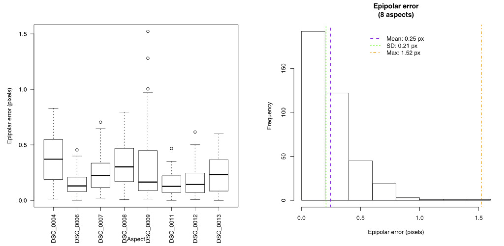
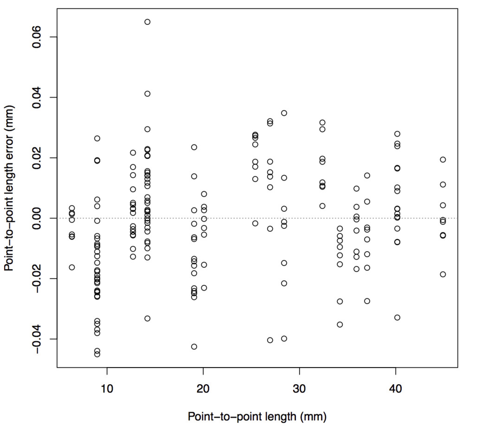
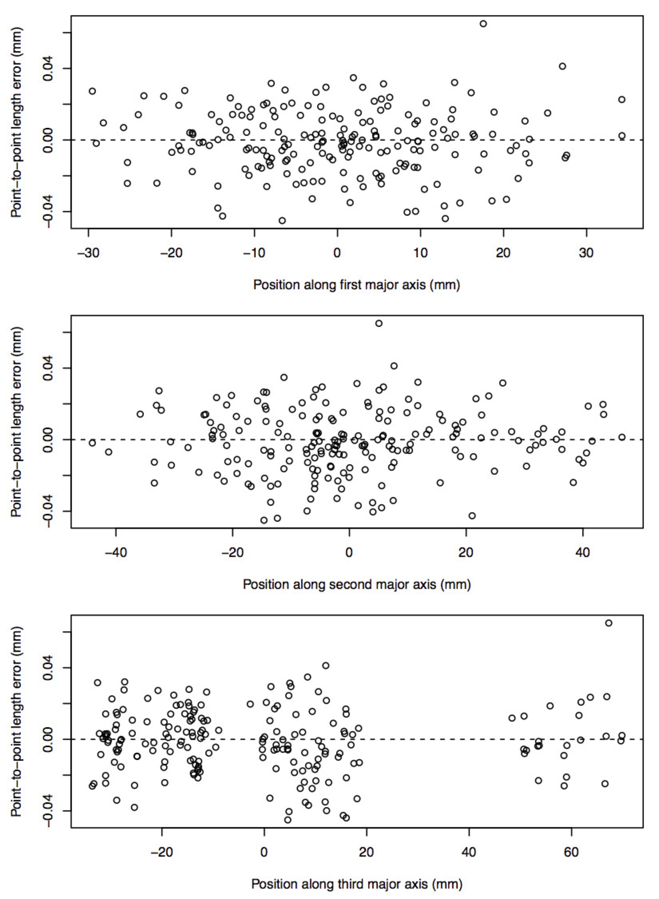

5.5 Determining the calibration accuracy
The optimization should generally converge on a value (reconstruction error) less than 1 for each minimization. This value is in pixels so regardless of the scale of your setup this error should be less than 1. If for some reason a particular set is not converging the function might stop running the minimization and switch to the next set. If the optimization fails to converge for all of the sets there is probably an error in the correspondence between the two corner sets. Most commonly this is due to corners that are in different orders between two views or between different aspects. The DLT coefficients corresponding to the optimization with the lowest error will then be saved in the "calibration.txt" file as an 11x2 matrix.
Once the best calibration is selected, the calibrateCameras() tests the calibration accuracy using all of the available calibration checkerboards. Note that these errors are measured using the same checkerboard that was used for the calibration. Therefore, they cannot be used to test whether the scaling of the calibration is correct. To test the accuracy of the calibration including scaling it's best to test the accuracy using an additional checkerboard with a different square size. The error diagnostics are the same in both cases so they will be described in this section. This section will use the calibrating from photographs example to explain how to interpret the various calibration error tests.
After the coefficient estimation, calibrateCameras() prints a "dltTestCalibration Summary":
dltTestCalibration Summary Number of aspects: 8 Number of views: 2 Square size: 6.35 mm Number of points per aspect: 48 Aligned ideal to reconstructed (AITR) point position errors: AITR RMS Errors (X,Y,Z): 0.0138 mm, 0.0118 mm, 0.0226 mm Mean AITR Distance Error: 0.0257 mm AITR Distance RMS Error: 0.0292 mm Inter-point distance (IPD) errors: IPD RMS Error: 0.0178 mm IPD Mean Absolute Error: 0.0141 mm Mean IPD error: -0.00112 mm Adjacent-pair distance errors: Mean adjacent-pair distance error: -0.00122 mm Mean adjacent-pair absolute distance error: 0.0167 mm SD of adjacent-pair distance error: 0.0193 mm Epipolar errors: Epipolar RMS Error: 0.246 px Epipolar Mean Error: 0.246 px Epipolar Max Error: 1.522 px SD of Epipolar Error: 0.208 px
This read-out summarizes four main error measurements:
- Aligned ideal to reconstructed (AITR) errors: The AITR error aligns an ideal (perfect) checkerboard to the reconstructed corners using least squares alignment. Then, the distance is measured between each ideal checkerboard corner and its corresponding reconstructed corner. If the corners were perfectly reconstructed, the ideal and reconstructed points would overlap perfectly. The "AITR RMS errors" are the alignment errors along each dimension (x,y,z) in the coordinate system of the calibration points. This coordinate system depends on the orientation of the first checkerboard so it is somewhat arbitrary. But if you have larger error along one dimension than another it will generally show up here. For the tutorial project the error is greatest along the z-axis but overall the mean errors are low (less than 25 microns along any dimension).
- Inter-point distance (IPD) errors: The IPD error summarizes distance rather than positional errors. For every reconstructed checkerboard, random pairs of points (without re-sampling) are chosen and the distance between them is compared to the distance on an ideal checkerboard. Unlike AITR error, this measure doesn't allow a comparison of the error along different dimensions. Additionally, while a range of different lengths are used to calculate the error the lengths can only be as large as the checkerboard. The IPD error should be about the same order of magnitude as the AITR error. For the tutorial project the IPD error is less than 20 microns. The reconstructed distances can be either shorter or longer than the actual distance. The "Mean IPD error" takes the simple mean of these errors: If there is no bias toward over- or underestimation of distance this should be near zero.
- Adjacent-pair distance errors: This is identical to IPD error except that the error is determined only using pairs of adjacent checkerboard corners. This means the ideal distances are uniform and the same size as the square size. Since the corners in each pair are uniformly close together, their mean position (the mid-point) can be used to look at how IPD error varies as a function of position in the calibration volume.
- Epipolar errors: For two cameras arranged in stereo a point in one camera view must fall along a line in a second camera view. This line is that point's epipolar line. The distance between a point's epipolar line and its corresponding point in that second camera view is the epipolar error. Since the error is a measure of distance between a line and point in the image plane the units are pixels.
It's important to consider the magnitude of these errors relative to the pixel resolution of the cameras and the size of the calibrated volume. For the tutorial project the image resolution is around 30 microns/pixel (using 12 MP cameras). Since digitized coordinates are limited to pixel resolution the reconstructed errors should always be greater 30 microns. Note that the calibration errors can be lower than this because the checkerboard corners are detected to subpixel resolution by sampling a small window of pixels around each internal corner and fitting a sub-pixel corner position. Also, the calibrated volume is approximately 60 mm x 80 mm x 100 mm. Thus, the mean distance (IPD) error is less than 0.03% of the length along any one dimension of the space.
In addition to the error summary read-out, calibrateCameras() creates several error diagnostic plots for a complete assessment of the error. These will be saved in a folder "Error tests" within the same folder as the "calibration.txt" file (if the "Error tests" folder doesn't exist before running calibrateCameras() one will be created). The plots for the tutorial calibration can be found in "Run 1/Calibrate/Error tests".
For example, the function creates a boxplot of the IPD errors, separated by aspect (left) and a histogram of the IPD errors (right) pooled from all aspects.
And the equivalent plots for epipolar error:
The function creates a plot of the IPD error as a function of the length between the two corners being measured to verify that error is not strongly correlated with the length being measured.
The function also uses all the reconstructed corners to identify the major axes through the calibration volume and plots the IPD error as a function of the position along each of these major axes. This is an easy way to get an idea of the size of the total calibrated volume and check whether the error is greater along one dimension than another.
